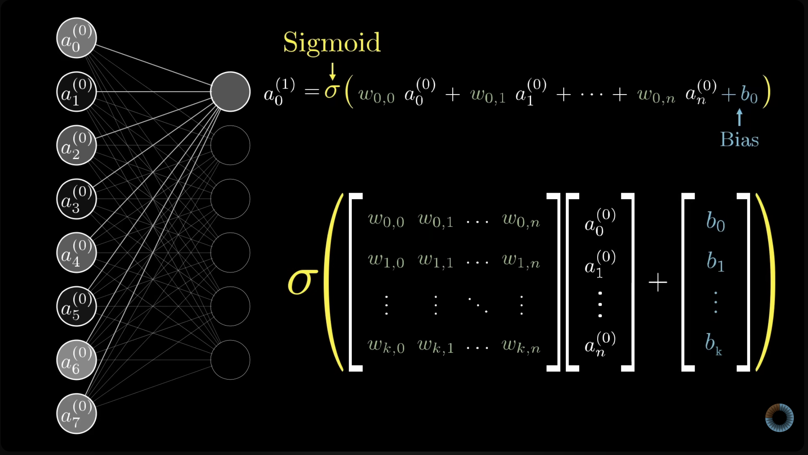
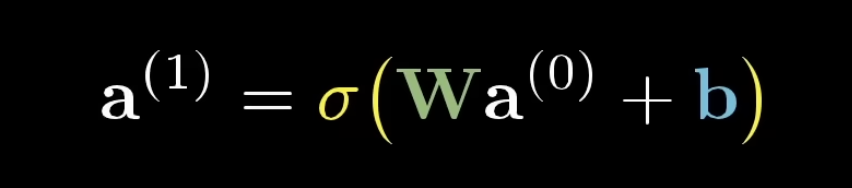

8 Neural Net
8.0.1 Motivating ideas and chronology
Our brains are incredible recognition and prediction machines. How do they work? Can we replicate the behavior artificially in a computer?
The provided papers give an chronology of the ideas in published literature.
- McColloch & Pitts (1943): A Logical Calculus of the Ideas Immanent in Nervous Activity
- Turning neuroscience into calculus.
- The first mathematical model of a neural network using binary neurons for computation.
- Rosenblatt (1958): The Perceptron: A probabilistic Model for Information Storage and Organization in the Brain
- Tackles the questions of information storage and memory for how we regognize things.
- Introducing the perceptron: the theory for a hpyothetical nervous system, or machine.
- Rumelhart, Hinton & Williams (1986): Learning representations by back-propagating errors
- Introducing back-propagation for “networks of neurone-like units”.
- New way to train networks with gradient descent on the errors, so that features can be discovered in hidden layers.
8.0.2 Math behind the model
Let’s jump into the notation and formulas with some visuals along the way to help out.
8.0.2.1 Some definitions
Neuron: The building block of a neural network.
- A function that takes inputs and produces a single number output (between 0 and 1)
- Inputs in the first set of neurons (first layer) are the predictors.
- Inputs in future sets of neurons (hidden layers) are weighted sums of outputs from the prior layer.
Layers: Arrangements of neurons.
- Input layer: the first layer of neurons that receives the predictors.
- Output layer: the final layer of neurons that produces the predictions \(\hat{y}\)
- Hidden layer: layers inbetween the input and output. Can be any number of layers we choose.
- transforms output of the previous layer
- able to distingush features and their relationships to the predictions
Simplest example: No hidden layers.
Next example: One hidden layer.
8.0.2.2 Some equations
Let’s start with the example for the single hidden layer. The full equation for going from input \(\mathbf{x}\) to predicted \(\hat{y}\) is
\[ \hat{y}(\mathbf{x}) = \mathbf{w}_{\text{out}}^t \, \sigma\!\left( W_1 \mathbf{x} + \mathbf{b}_1 \right) + b_{\text{out}} \]
This is also called the “forward pass”, to go from input \(\mathbf{x}\) to a prediction \(\hat{y}\).
- \(W_1\) is the \(m \times p\) weight matrix for the hidden layer, given a network with \(p\) predictors and \(m\) hidden neurons.
- \(\mathbf{b}_1 \in \mathbb{R}^m\) is the hidden layer’s bias vector
- \(\sigma(\cdot)\) is a nonlinear activation function applied element-wise
- The hidden layer’s outputs are then combined linearly using the output-layer weights \(\mathbf{w}_{\text{out}} \in \mathbb{R}^m\) and bias \(b_{\text{out}} \in \mathbb{R}\).
- In Figure 8.2 there are \(p = 2\) inputs and \(m = 4\) hidden neurons, so \(W_1\) is a \(4 \times 2\) matrix, \(\mathbf{b}_1\) and \(\mathbf{w}_{\text{out}}\) each have 4 entries, and each arrow in the figure is one weight.
Then we can consider the generalization of this function for multiple layers.
For this network, the output of each layer becomes the input to the next:
\[ \mathbf{h}^{(1)} = \sigma(W_1 \mathbf{x} + \mathbf{b}_1), \quad \mathbf{h}^{(2)} = \sigma(W_2 \mathbf{h}^{(1)} + \mathbf{b}_2), \quad \ldots, \quad \hat{y} = \mathbf{w}_{\text{out}}^t \mathbf{h}^{(L)} + b_{\text{out}} \]
where \(L\) is the number of hidden layers. Figure 8.3 has \(L = 2\): \(W_1\) is \(4 \times 2\) and \(W_2\) is \(3 \times 4\).
Those sigmas represent activation functions. These make the network nonlinear, so that it isn’t just linear regression.
| Function | Formula |
|---|---|
| Sigmoid | \(\sigma(z) = \frac{1}{1+e^{-z}}\) |
| ReLU | \(\sigma(z) = \max(0, z)\) |
| tanh | \(\sigma(z) = \tanh(z)\) |
8.0.2.3 A larger visualization of the matrix


Note: \(\mathbf{a}\) is used in place of \(\mathbf{h}\) here.
8.0.2.4 Training the model
The network is trained by minimizing a loss function over the training data. For a continuous outcome, the loss is mean squared error:
\[ \mathcal{L}(\mathbf{w}) = \frac{1}{n} \sum_{i=1}^n \bigl(y_i - \hat{y}(\mathbf{x}_i)\bigr)^2 \]
We minimize the loss function through gradient descent, where the weights are updated iteratively in the direction that reduces the loss most steeply. At each step,
\[ \mathbf{w} \leftarrow \mathbf{w} - \eta \, \nabla_{\mathbf{w}} \mathcal{L} \]
\(\eta > 0\) is the learning rate, which controls the size of each step. If it is too large, the optimizer diverges; if it is too small, convergence is slow. Other key training hyperparameters are the number of epochs (passes over the training data) and the batch size (how many observations are used to estimate each gradient update).
The gradients \(\nabla_{\mathbf{w}} \mathcal{L}\) are computed efficiently by applying the chain rule backwards through the network, from the output layer to the first hidden layer. This procedure is called backpropagation.
8.0.2.5 Really helpful resource for explaining this
8.0.3 Sources:
- Tom Stewart, Intro to Prediction Modeling: https://tgstewart.cloud/ipm/models-overview.html#sec-nnet
- 3Blue1Brown, Neural Networks: https://youtube.com/playlist?list=PLZHQObOWTQDNU6R1_67000Dx_ZCJB-3pi&si=eTLONIqIN-zzii3t
- McCulloch, W. S. & Pitts, W. (1943), A Logical Calculus of the Ideas Immanent in Nervous Activity, Bulletin of Mathematical Biophysics 5: 115-133
- Rosenblatt, F. (1958), The Perceptron: A Probabilistic Model for Information Storage and Organization in the Brain, Psychological Review 65(6): 386-408
- Rumelhart, D. E., Hinton, G. E. & Williams, R. J. (1986), Learning Representations by Back-Propagating Errors, Nature 323: 533-536
8.0.4 Future Reference:
- http://neuralnetworksanddeeplearning.com/